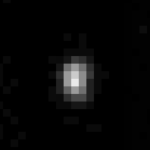

Nasa Consegue Fotografar Buraco negro pela primeira vez(Mais sobre a foto). Eles também lançaram gifs como:


Agência Espacial Portuguesa – Portugal Space

|
No ano 2000 Portugal aderiu à ESA (Agência Espacial Europeia) como membro de pleno direito. Agora Portugal vai um pouco mais longe e, para além de fazer parte da ESA, cria também a Agência Espacial Portuguesa, conhecida por Portugal Space, que tem a sede na Ilha de Santa Maria, no arquipélago dos Açores. |
M14 – Aglomerado Globular – Constelação de Ofiúco
|
M14 (Messier 14), também designado por NGC 6402, é um aglomerado globular (ou enxame globular) na constelação de Ofiúco. A magnitude aparente de Messier 14 é de cerca de +8,3 não sendo visível a olho nu, mas é possível ser observado através de binóculos e de telescópios. |
Farout – Possível Planeta Anão
|
Farout, também designado por 2018 VG18, é um possível planeta anão, sendo este o objeto do Sistema Solar mais distante observado até hoje. Farout foi descoberto pelos astrónomos Scott Sheppard, David Tholen e Chad Trujillo no dia 10 de Novembro de 2018. |
Sonda New Horizons chegou a Ultima Thule
|
No dia 1 de Janeiro de 2019, a sonda espacial New Horizons da NASA fez História ao passar pelas proximidades de Ultima Thule, um objeto da Cintura de Kuiper que assim tornou-se no objeto mais distante alguma vez visitado por uma sonda espacial até à presente data. |
Eclipses Solares e Lunares em 2019
|
Eclipses em 2019: Ao longo do ano de 2019 vão ocorrer 5 eclipses, sendo 3 eclipses do Sol e 2 eclipses da Lua. Um eclipse (seja do Sol ou da Lua) é um acontecimento astronómico que desperta muita curiosidade tanto nos astrónomos profissionais quanto nas pessoas em geral. Como tal vamos apresentar neste artigo onde e quando poderão ser observados os eclipses em 2019. |
Himalia – Satélite de Júpiter
|  |
Himalia é um satélite natural (lua) do planeta Júpiter. O satélite Himalia foi descoberto no dia 3 de Dezembro de 1904 pelo astrónomo Charles Dilton Perrine. Apesar de diversas sondas espaciais já terem visitado o planeta Júpiter e seu sistema de satélites, ainda não possuímos nenhuma foto com boa resolução de Himalia. |
M12 – Aglomerado Globular – Constelação de Ofiúco
|
M12 (Messier 12), também conhecido por NGC 6218, é um aglomerado globular que se situa na constelação de Ofiúco. A magnitude aparente de M12 é de +7,7 pelo que não é visível a olho nu, sendo necessário o recurso a um instrumento de observação (binóculos ou telescópio) |
Ultima Thule e a sonda New Horizons
|
Ultima Thule é o apelido que foi escolhido para 2014 MU69, um objeto da Cintura de Kuiper que é o próximo alvo da sonda espacial New Horizons (lançada pela NASA) a ser alcançado logo no início do ano 2019. O nome Ultima Thule não é oficial, a escolha definitiva do nome para este objeto celeste deverá ser feita só depois da passagem da sonda New Horizons. |
Estrela Adhara – Constelação do Cão Maior
|
A estrela Adhara, também conhecida como Epsilon Canis Majoris, é a segunda estrela mais brilhante da constelação de Cão Maior. Adhara trata-se na verdade de uma estrela binária (ou sistema binário). É portanto constituída por duas estrelas ligadas entre si gravitacionalmente, porém a olho nu aparece-nos como sendo apenas uma estrela. |
Astronomia – Temas Gerais e Fundamentais
|
Aqui no Site Astronomia já foram publicadas várias centenas de artigos que abordam os mais variados assuntos ligados à astronomia. Entre tantos artigos, podemos destacar alguns que podem servir como “artigos base” para ajudar o leitor deste site a ter uma visão mais organizada sobre alguns dos temas fundamentais desta ciência fascinante. Seguem-se então esses “artigos base” (ou “artigos iniciais”) que tanto podem ajudar quem está a iniciar o estudo da astronomia de forma organizada, como também ajudar aqueles que já conhecem esta ciência a aprofundar um pouco mais seus conhecimentos nos seus pontos essenciais. |